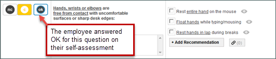
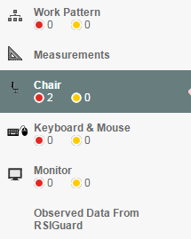

The Status buttons next to each item in the worksheet are used by the Evaluator to indicate the status of an issue.
OK indicates there is no issue
NC indicates that there is an issue and it could not be corrected during the evaluation.
C indicates that there was an issue but it was corrected during the evaluation.
A blue outline around a button indicates the employee's response in the OES self-assessment. When the Evaluator selects a different response, the system will update the employee's answer to indicate the issue has been resolved in the completed report.

The Red and Yellow Circles in the left navigation bar track the number of C (corrected) and NC (not corrected) issues in each category. When doing a follow-up the Evaluator will be able to quickly access and update the status of any NC issue that could not be corrected during the evaluation.
